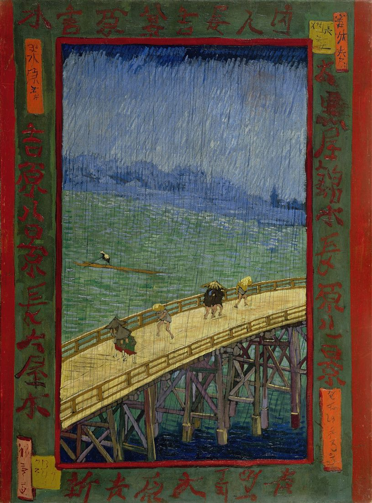
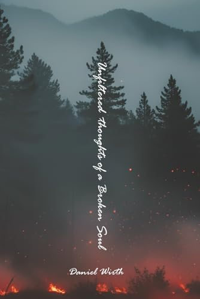
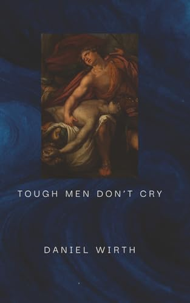

Books & Poetry
Poetry written straight from life.
This Month’s Poem
September 2026
The sting of the morning magnifies our waking We huddle to hide from the cold yet need it to feel alive Rays of warmth filter through branches dancing around us and our mind dances with them We carry heavy bodies into the World making ourselves lighter and we restart our consumption of the World

Books

Unfiltered Thoughts of a Broken Soul
A journey through fire, ash, and renewal. Jagged, existential free verse that bleeds with loss, despair, and rage — and still blooms with love, resilience, and self-discovery. Seven sections that move from darkness and ruin toward becoming. Not polished. Written straight from life, for anyone who has been broken and kept moving.
Read here · paperback & Kindle on Amazon

Tough Men Don’t Cry
Poems that push into the space between strength, grief, and failure — a plain reckoning with human inadequacy and the weight of carrying too much. For anyone who has felt like they were drowning while everyone around them assumed they were “fine.”
Read here · paperback on Amazon